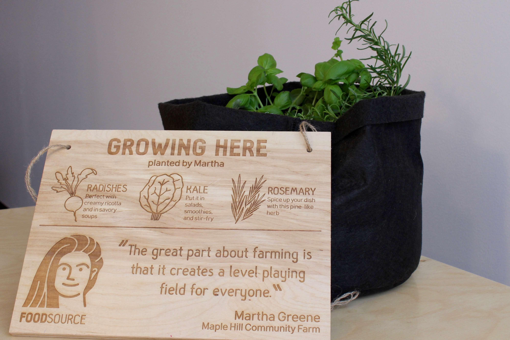
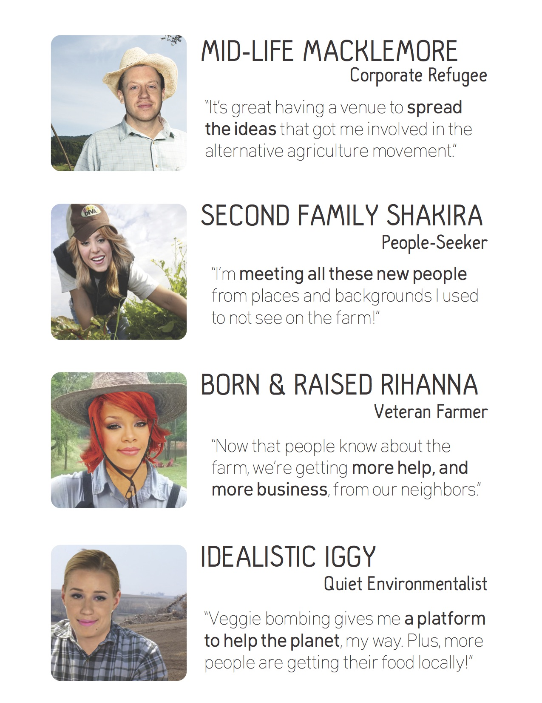

I'm a developer and designer based in Boston, MA.
During the spring of 2016, I worked with a team of five Olin students on a collaborative design project for local, organic Massachusetts farmers. Over nine weeks, we interviewed and designed with over a dozen farmers in order to better understand their pain points and to develop something that would be useful. We found that since farmers spend so much of their time working on their farms, they had little time to advocate on behalf of the larger local farming movement. In order to help them do this without creating extra work for them, my team developed a grass-roots advocacy campaign, called Food Source. The campaign consisted of two main installations. First, vegetable bombing (a twist on yarn bombing), was a way to take unused green space in cities and other urban areas and turn it into a micro-farm that is taken care of my volunteers to promote healthy, organic eating in areas where farms may not be abundant. Secondly, we developed a set of classic street signs to be used in areas to enlighten people on how close local farms and farmers markets are and encourage people to see and volunteer at these farms.
 